Test Environment
| Base URL | http://localhost:8080 (host); plugin iframes at http://localhost:3011 (Next.js 15.5 dev) |
|---|---|
| Browser | Playwright MCP, Chromium |
| Viewport | 2260×1120 CSS px (DPR 1.12); tab iframe 600 px, badge iframe 60 px |
| Auth | viewer (READ) for 4.6–4.7; editor (READ+EDIT) for all others; dev fixture logins |
| Data | Live dev seed: products 1, 15 and 16 analyzed; 2 and 3 not analyzed at the start |
Verification Scenarios
4.1 Editor stays on Details: no auto-run ✅ Passed
| # | Action | Expected | Actual | Status |
|---|---|---|---|---|
| 1 | Open /products/2, wait 5 s on Details | No POST /api/analyze | Log shows only GET page loads; 0 llm-call lines | ✅ |
| 2 | Badge iframe | Plain "AI review: not analyzed yet" | tc-badge, exact text | ✅ |
| 3 | Hidden tab iframe | 0×0 viewport, no run | innerWidth/innerHeight 0; "Not analyzed" | ✅ |
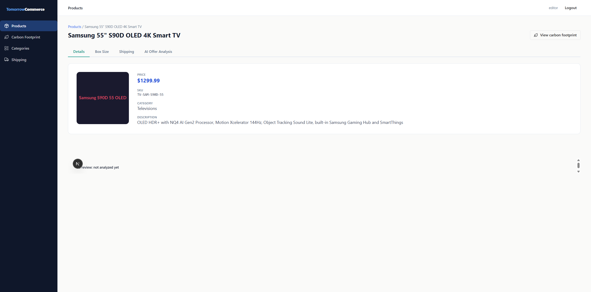
4.2 Editor opens the AI tab: auto-run, then result ✅ Passed
| # | Action | Expected | Actual | Status |
|---|---|---|---|---|
| 1 | Click "AI Offer Analysis" | One auto-run once visible | One POST 200 (6.2 s); llm-call productId=2 outcome=ok | ✅ |
| 2 | Header | Subtitle "Analyzed … · gpt-4o-mini via LiteLLM" | "Analyzed 12 Nov 2026, 21:02 · gpt-4o-mini via LiteLLM", "Looks good", Re-analyze | ✅ |
| 3 | Sections | Per-section layout rule | ACCEPTABLE detailed; FITS compact; FAIR −13% compact line | ✅ |
| 4 | "Priced as" | Line shown | "Priced as: 55-inch OLED 4K Smart TV" | ✅ |
| 5 | Peers | Self excluded | Televisions, 2: LG C4, Sony | ✅ |
The live running state was not captured: the run completed before the probe. See 4.4 and 4.8.
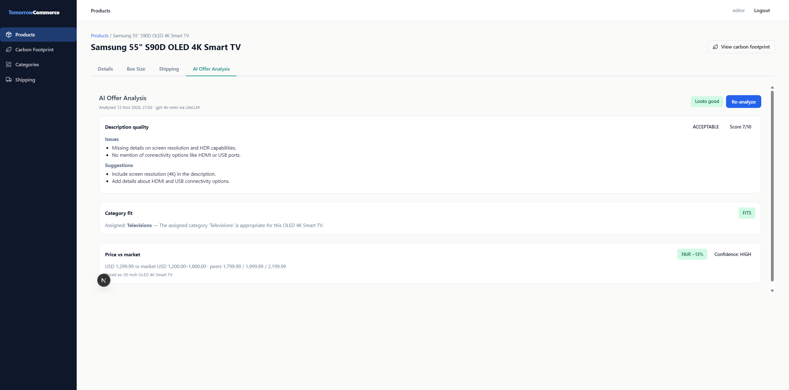
4.3 Badge refresh over BroadcastChannel, and no repeat run ✅ Passed
| # | Action | Expected | Actual | Status |
|---|---|---|---|---|
| 1 | Back to Details (no reload) | Badge updated | Success "AI review: Looks good"; no frame navigation | ✅ |
| 2 | AI tab again | No run | No new log line | ✅ |
| 3 | Reload, then open the tab | No run | Saved result; still 1 llm-call | ✅ |

4.4 Editor on Vistara (15): stored result, then Re-analyze ✅ Passed
| # | Action | Expected | Actual | Status |
|---|---|---|---|---|
| 1 | Open the tab | Stored result | Needs review; POOR 3/10 with Issues/Suggestions; MISMATCH Smart Home → Televisions | ✅ |
| 2 | Price section | Per stored record | FAIR +12%, HIGH; "USD 2,799.00 vs market USD 1,500.00–3,500.00 · peers 179.99 / 179.99 / 279.99"; Priced as 65-inch OLED 4K TV | ✅ |
| 3 | Click Re-analyze | Running; button disabled | "Analyzing…", labelled indeterminate progress, Re-analyze [disabled], no reason line | ✅ |
| 4 | Completion | Refreshed | Subtitle 20:39 → 21:03; llm-call productId=15 outcome=ok | ✅ |
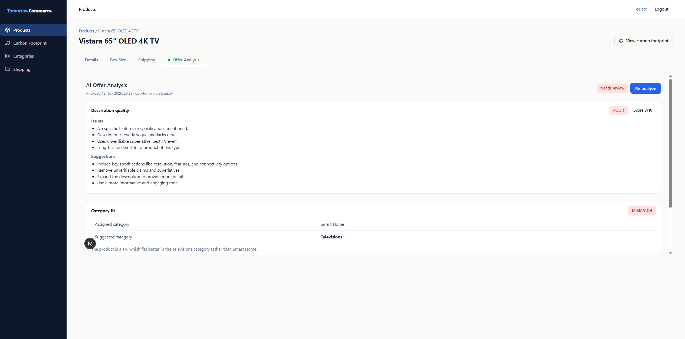
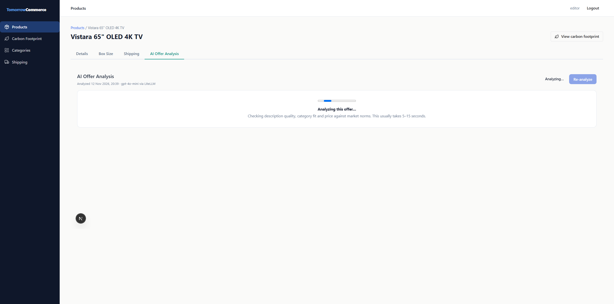
4.5 Product list "AI: needs review" filter ✅ Passed
| # | Action | Expected | Actual | Status |
|---|---|---|---|---|
| 1 | Open /products | Host-rendered switch | Present; 16 products listed | ✅ |
| 2 | Click the switch control | Flagged products only | pluginFilter=ai-offer-analysis:needsReview:bool:true → 2 products: Vistara, Skylink | ✅ |
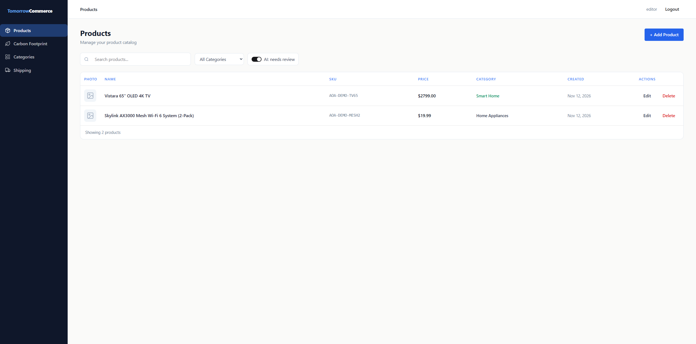
4.6 Viewer on Vistara (15): saved result, no buttons, no call ✅ Passed
| # | Action | Expected | Actual | Status |
|---|---|---|---|---|
| 1 | Details badge | Danger plus reasons | "AI review: Needs review" · "category mismatch · poor description" | ✅ |
| 2 | AI tab | Saved result, no Re-analyze | Full result; no buttons; aria-live polite | ✅ |
| 3 | Plugin log | No POST | GET page loads only | ✅ |
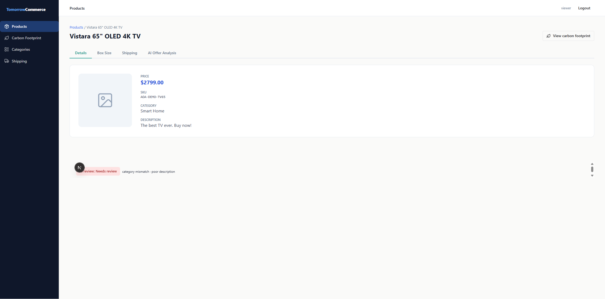
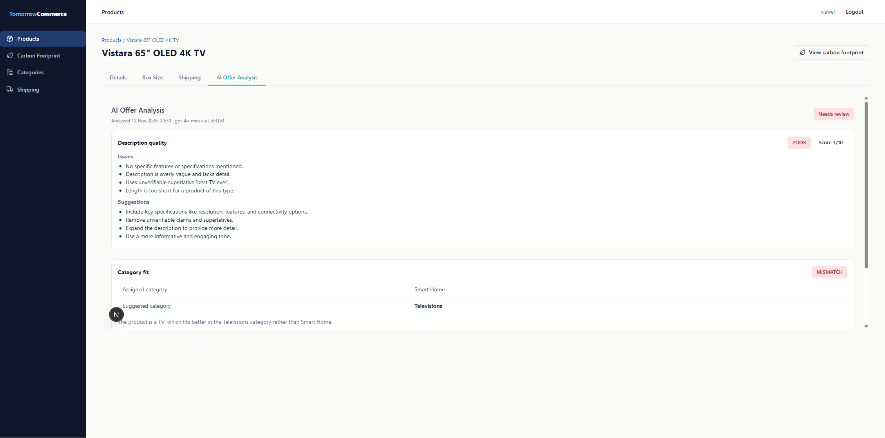
4.7 Viewer on a never-analyzed product (3) ✅ Passed
| # | Action | Expected | Actual | Status |
|---|---|---|---|---|
| 1 | Details badge | "not analyzed yet" | As expected | ✅ |
| 2 | AI tab | "Not analyzed yet" card | Exact copy, one tc-card, no buttons, no POST | ✅ |
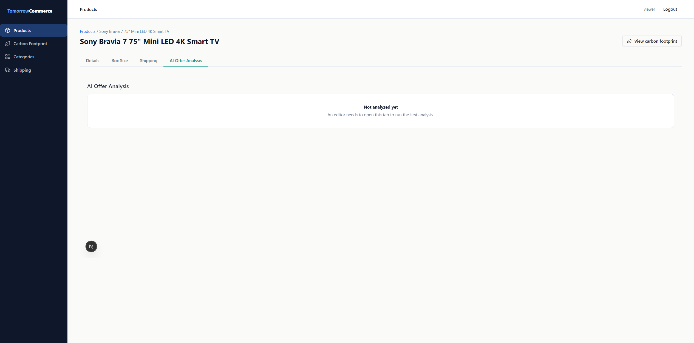
4.8 Error path with a stubbed network: no repeat, Retry and CONTENT_BLOCKED hint ✅ Passed
| # | Action | Expected | Actual | Status |
|---|---|---|---|---|
| 1 | Load the page, stay on Details | No request | 0 hits | ✅ |
| 2 | Click the AI tab | Running with the reason line | "Started automatically: this product has not been analyzed yet."; Re-analyze disabled | ✅ |
| 3 | 502 LLM_UNAVAILABLE | Sanitized error plus Retry; "Not analyzed", no subtitle | As expected; Re-analyze hidden | ✅ |
| 4 | Details, then AI tab again | No second auto-run | Hits stay at 1 | ✅ |
| 5 | Retry (CONTENT_BLOCKED) | Blocked message plus hint | Message, hint and Retry rendered | ✅ |
| 6 | Reload, check the badge | Nothing saved | Still "not analyzed yet" | ✅ |
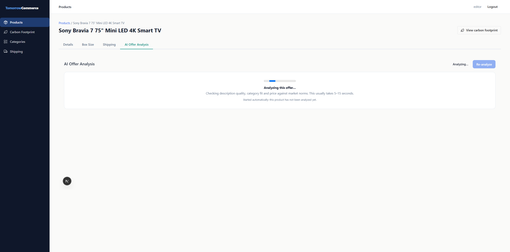
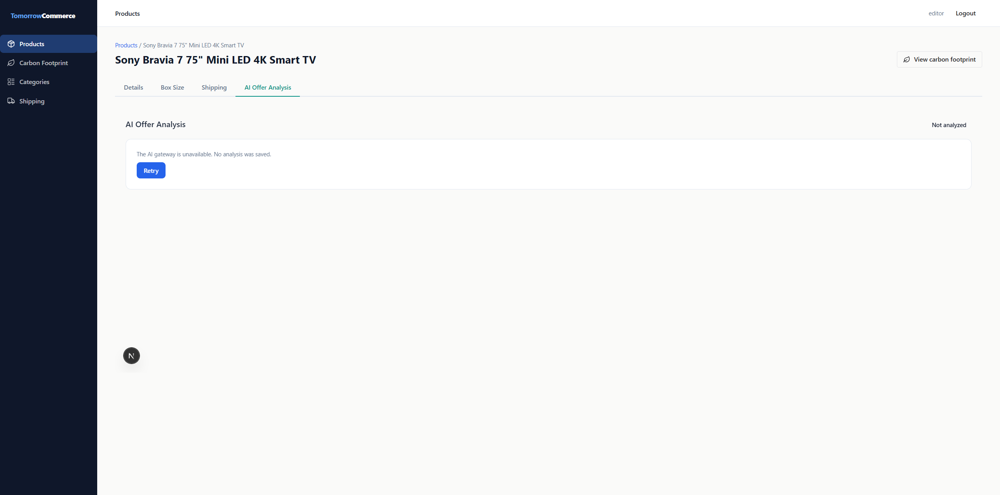
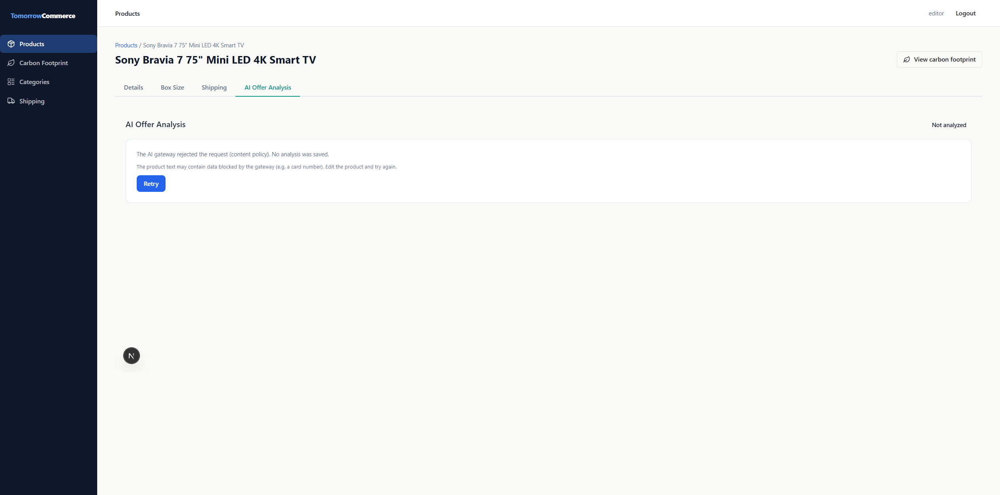
4.9 Stored states for LG C4 (1) and Skylink (16) ✅ Passed
| # | Action | Expected | Actual | Status |
|---|---|---|---|---|
| 1 | LG C4 badge and tab | Looks good, compact, peers Televisions 2 | GOOD 8/10, FITS, FAIR +3%, peers 1,299.99 / 1,749.99 / 2,199.99 | ✅ |
| 2 | Skylink badge | Reasons in the fixed order | "price −90% below market · category mismatch" | ✅ |
| 3 | Skylink price | Detailed table | 19.99; 100.00 – 300.00; Catalog peers (Home Appliances, 3) 649.99 / 799.99 / 1,099.95 | ✅ |
| 4 | Skylink category | MISMATCH → Networking | As expected | ✅ |
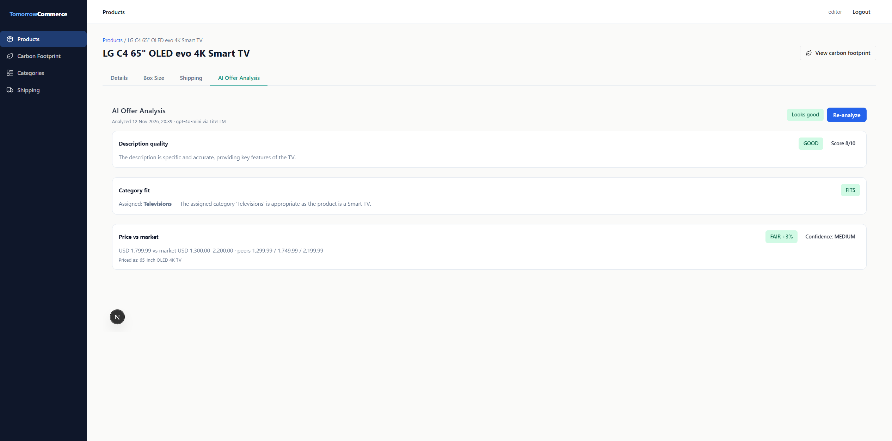
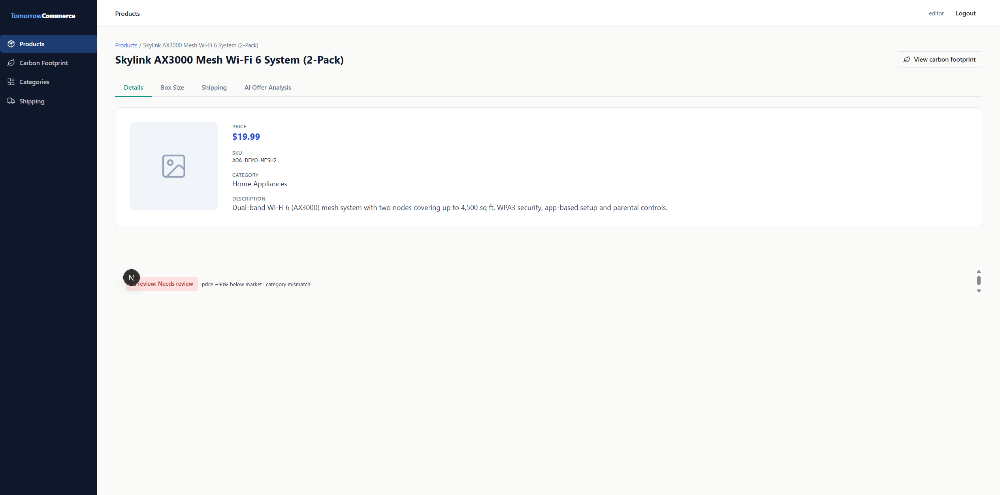
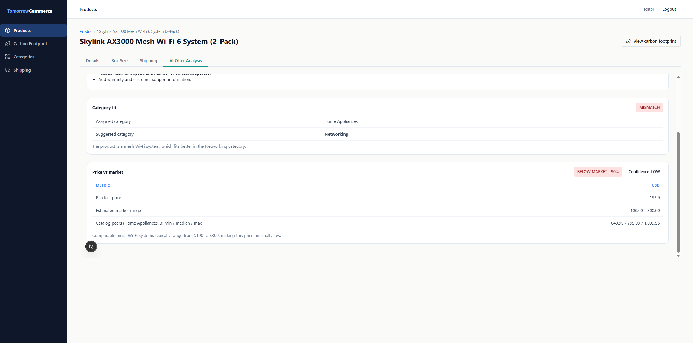
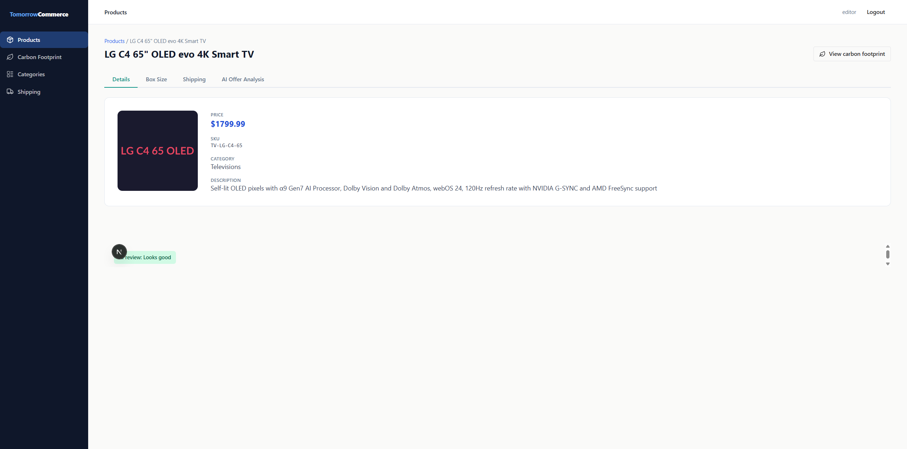
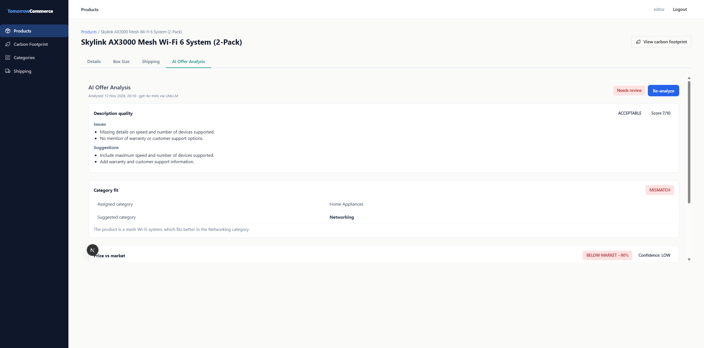
4.10 LLM-call ground truth in the plugin log ⚠️ Passed with issues
| # | Action | Expected | Actual | Status |
|---|---|---|---|---|
| 1 | Count llm-call lines | 2 (runs triggered) | 2: productId=2 ok 6100 ms; productId=15 ok 6699 ms | ✅ |
| 2 | Prompt or reply in the log | None (BAML_LOG=warn) | [BAML INFO] Function AnalyzeOffer blocks with ---PROMPT--- and ---LLM REPLY--- | ❌ |
Discrepancies
Critical: None observed. · Major: None observed.
minor#1: BAML echoes the full prompt and LLM reply to the plugin stdout
- Spec requirement
- Deviation (e):
BAML_LOG=warnso BAML does not echo prompts and responses; (d): the prompt and raw LLM output are never logged - Expected
- Only Next.js request lines and
llm-calllines - Actual
- A block of about 170 lines per call, with the full prompt (product text, peers) and the raw and parsed reply
- Evidence
- plugin3.log lines 27–193 and 200–375;
.env.example:12has BAML_LOG=warn - Root cause hypothesis
- The local plugin
.envmost likely predates fix cycle 1 and lacks BAML_LOG=warn (not inspected). Less likely: the variable is not applied to the BAML runtime - User impact
- None for end users. The local log holds unmasked product text, and noise buries the llm-call lines
- Recommended fix
- Add or confirm BAML_LOG=warn in the plugin .env and restart. If it still appears, set it in the dev/start scripts
- Workaround
- Export BAML_LOG=warn in the shell before
npm run dev
cosmetic#1: Next.js dev indicator overlaps plugin content
- Spec requirement
- The badge fits in 60 px, and its verdict text is always shown
- Expected
- Badge text fully visible
- Actual
- The "N" dev-tools button covers the start of "AI review" and the tab's lower-left corner
- Evidence
screenshots/e2e-51-editor-details-badge-p16.png,screenshots/e2e-41-viewer-vistara-tab.png- Root cause hypothesis
- The
next devindicator; absent in production builds - User impact
- Dev only; affects demo screenshots
- Recommended fix
- Optional
devIndicators: false - Workaround
npm run build && npm startfor demos
cosmetic#2: The host "AI: needs review" switch has no accessible name
- Spec requirement
- The host renders
product.list.filters(out of scope); the accessibility standard asks for labels - Expected
- Checkbox labelled "AI: needs review"
- Actual
- An unnamed checkbox plus a separate paragraph
- Evidence
screenshots/e2e-20-list-filter-needs-review.png- Root cause hypothesis
- The host's boolean filter component does not associate its label (shared by all plugins)
- User impact
- Screen readers announce an unlabelled switch
- Recommended fix
- A separate host task: aria-label from the manifest label
- Workaround
- None needed for sighted users
Console & Network Errors
| Source | Message | Frequency | Severity | Impact |
|---|---|---|---|---|
| localhost:3011/api/analyze | Failed to load resource: 502 | 2 (4.8 only) | Cosmetic | Expected: stubbed responses |
| host index-DZu6PCv-.js:9 (warning) | iframe allow-scripts + allow-same-origin can escape sandboxing | Every page load | Cosmetic | Pre-existing host sandbox setting; out of scope |
No uncaught page errors; 0 non-2xx live /api/analyze responses.
Spec Alignment
Fully implemented
- Visibility gate, one attempt per session, no repeat after an error or tab switch
- Fingerprint staleness
- Header, running state and per-section layouts; badge mapping and labels
- "Priced as"; compact FAIR line
- Assigned-category peers with self excluded
- 3-state badge plus BroadcastChannel
- Boolean list filter
- Viewer states with no calls
- Error states and the CONTENT_BLOCKED hint; Retry only
- One
llm-callline per BAML call
Partially implemented: deviation (e) BAML_LOG=warn is documented but not effective in the running plugin.
Not implemented: None observed.
Extra: while a not-yet-analyzed tab is hidden, its header shows an enabled Re-analyze. It is never visible, because the auto-run replaces it.
Variances from Plan
- Error path. Stubbed at the network level, not by stopping LiteLLM (per the brief). The server-side classification is not exercised.
- Live running state. Not captured: the first tab clicks after login did not register (a harness quirk). The running state was verified on the manual Re-analyze (live) and on the stubbed auto-run.
- Viewer stale note. Not exercised.
- Products used. Scenario 1 used product 2. The viewer no-analysis check and the stubbed error path used product 3 (nothing saved).
- Out of scope. LiteLLM
/spend/logsdelta, Langfuse, Jest/Maven, and the edit-triggers-re-run criterion. - LLM budget. 2 of 3 calls used.
Exit Criteria
| Criterion (spec Success Criteria) | Status | Evidence |
|---|---|---|
| Tab, info badge and list switch appear | ✅ | 4.1, 4.5 |
| Product page without opening the tab makes no /api/analyze call | ✅ | 4.1 |
| Exactly one auto-run on first open for a new or changed product | ✅ | 4.2 |
| Re-opening without content changes makes no LLM call | ✅ | 4.3 |
| Failed auto-run not repeated; Retry runs again | ✅ | 4.8 |
| Viewer never triggers /api/analyze; saved result or "Not analyzed yet" | ✅ | 4.6, 4.7 |
| Demo products "Needs review" with strongly cued flags in the tab and badge | ✅ | 4.4, 4.9 |
| Peer rows show the assigned category, self excluded | ✅ | 4.2, 4.9 |
| Badge refreshes without reload; filter returns flagged products | ✅ | 4.3, 4.5 |
| Only sanitized error messages reach the browser | ✅ | 4.8 |
Recommendations
- Must fix before merge: None.
- Should fix soon: Minor #1: make
BAML_LOG=warneffective, then re-check the log. - Nice-to-have: Cosmetic #1 (dev indicator); Cosmetic #2 (host filter switch label, a separate host task).
Artifacts & Conclusion
Screenshots: verification/screenshots/ (19 e2e-* plus 7 e2e-mockup-*). Visual fidelity: visual-fidelity.html (md).
⚠️ GO WITH CAVEATS. All 10 runtime scenarios behave as specified. The one real deviation is BAML prompt logging in the dev plugin, most likely a .env gap. Next step: merge after confirming that BAML_LOG=warn is in the plugin .env and the [BAML INFO] blocks disappear.